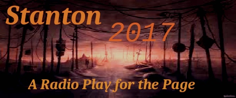

Jester Knight
Stanton 2017
Literature
Film
Music
Visual Art
Tributes
Submissions
Links
Contact
Playwriting | Poetry | Lit | Jester-Knight | Essays
Mindmaps | Sutras | Resumes | Photo Gallery
Minor Confessions | Stanton 2017

Stanton 2017
“A radio play for the page”
Stanton 2017 is part of an alternate/augmented history of the world created by Joey Madia in the tradition of H P Lovecraft and F Paul Wilson. Characters and storylines from this larger world appear in some of Joey’s short stories, his play A Kitchner County Menace, poems, and most notably in his novel, Minor Confessions of an Angel Falling Upward.
In modern America, three families—the Ravenskalds, the Stantons, and the Sicaris—are locked together in an unfolding of history that goes back to the Middle Ages in Europe.
As the clock clicks down to December 21, 2017, and a mysterious voice from the future reaches back in time to send a Warning, which family will prevail?
Theme
THE SCRIPTS
Episode 1: Vox Abductus
Opening Monologue - Episode 1: Vox Abductus
Script - Episode 1: Vox Abductus (PDF)
*************
Episode 2: Mary
Opening Monologue - Episode 2: Mary
Script - Episode 2: Mary (PDF)
*************
Episode 3: A New Technic
Opening Monologue - Episode 3: A New Technic
Script - Episode 3: A New Technic (PDF)
*************
Episode 4: The Vessel and the Seed
Opening Monologue - Episode 4: The Vessel and the Seed
Script - Episode 4: The Vessel and the Seed (PDF)
*************
Episode 5: Serial San Francisco
Opening Monologue - Episode 5: Serial San Francisco
Script - Episode 5: Serial San Francisco (PDF)
*************
Thanks to PrestoMusico for the design of the Stanton pages.
The Stanton banner was designed by Jolie Madia.
The Stanton theme music was composed by Joey Madia.